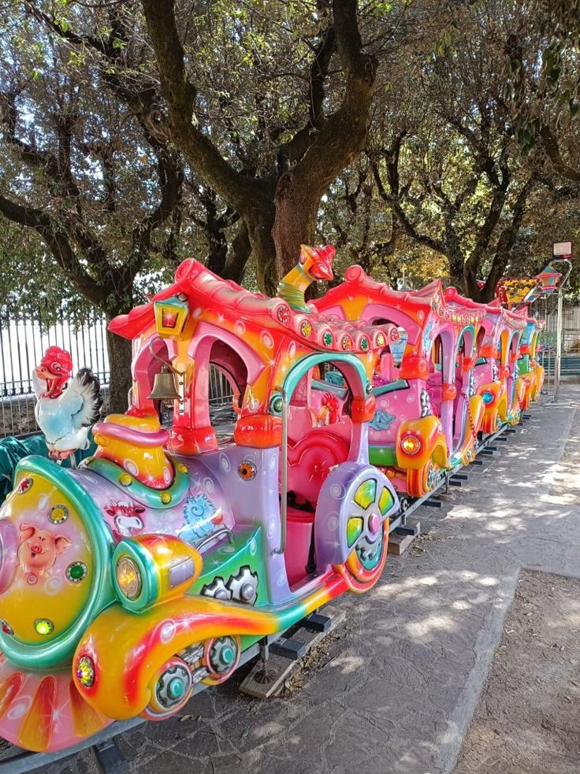

Attrazione Perris Ent.
Trenino lillipuziano per bambini
Trenino lillipuziano per bambini, ideale per feste di paese, eventi comunali, centri commerciali e manifestazioni.
Perris Ent. propone Trenino Lillipuziano per eventi in Puglia, feste patronali, sagre, manifestazioni, festival, eventi aziendali e feste private. Il servizio viene organizzato in base allo spazio disponibile e alle esigenze dell’organizzatore.

Trenino lillipuziano per bambini per eventi in Puglia
Questa attrazione è adatta a chi vuole arricchire il proprio evento con un servizio scenografico, professionale e riconoscibile. Perris Ent. segue l’organizzazione dell’area intrattenimento con esperienza maturata dal 1995 nel settore Luna Park.
Ideale per
- Feste patronali e sagre
- Eventi comunali e manifestazioni
- Festival e grandi eventi
- Compleanni, matrimoni ed eventi privati
- Eventi aziendali e centri commerciali